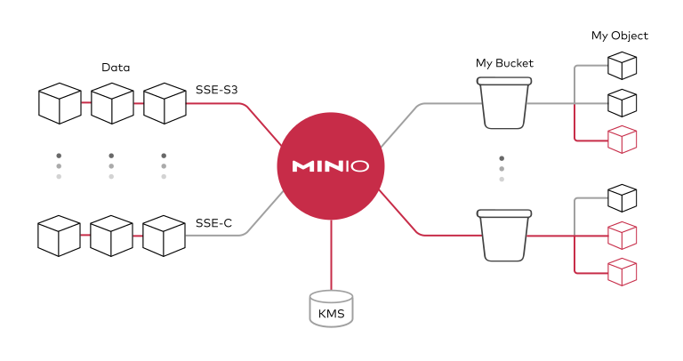

Stockage de données
Principes
La solution de stockage de fichiers associée au Datalab est MinIO, un système de stockage d’objets basé sur le cloud, compatible avec l’API S3 d’Amazon. Concrètement, cela a plusieurs avantages :
- les fichiers stockés sont accessibles facilement et à n’importe quel endroit : un fichier est accessible directement via une simple URL, qui peut être partagée ;
- il est possible d’accéder aux fichiers stockés directement dans les services de data science (R, Python…) proposés sur le Datalab, sans avoir besoin de copier les fichiers localement au préalable, ce qui améliore fortement la reproductibilité des analyses.

Gérer ses données
Importer des données
La page Mes fichiers du Datalab prend la forme d’un explorateur de fichiers présentant les différents buckets (dépôts) auxquels l’utilisateur a accès.
Chaque utilisateur dispose par défaut d’un bucket personnel pour stocker ses fichiers. Au sein de ce bucket, deux options sont possibles :
- “créer un répertoire” : crée un répertoire dans le bucket/répertoire courant, de manière hiérarchique, comme dans un système de fichiers traditionnel ;
- “uploader** un fichier**” : upload un ou plusieurs fichiers dans le répertoire courant.
L’interface graphique du stockage de données sur le Datalab est encore en cours de construction. Elle peut à ce titre présenter des problèmes de réactivité. Pour des opérations fréquentes sur le stockage de fichiers, il peut être préférable d’interagir avec MinIO via le terminal.
Partager des données
En cliquant sur un fichier dans son bucket personnel, on accède à sa page de caractéristiques. Sur celle-ci, il est notamment possible de changer le statut de diffusion du fichier. Changer le statut du fichier de “privé” à “public” permet d’obtenir un lien de diffusion, qui peut alors être transmis pour téléchargement du fichier. Le statut “public” ne donne aux autres utilisateurs que des droits en lecture, la modification ou la suppression de fichiers personnels par d’autres utilisateurs est impossible.
Pour simplifier la mise à disposition en lecture de plusieurs fichiers — dans le cadre d’une formation par exemple — il est possible de créer un dossier “diffusion” dans son bucket personnel. Par défaut, tous les fichiers présents dans ce dossier ont un statut de diffusion public.
Dans le cadre de projets collaboratifs, il peut être intéressant pour les différents participants d’avoir accès à un espace de stockage commun. Il est possible pour cet usage de créer des buckets partagés sur MinIO. N’hésitez pas à nous contacter via les canaux précisés sur la page “Première utilisation” si vous souhaitez porter des projets open-data sur le Datalab.
Conformément aux conditions d’utilisation, seuls des données de type open data ou ne présentant aucune sensibilité peuvent être stockées sur le Datalab. Le fait qu’un fichier ait un statut de diffusion “privé” ne suffit pas à garantir une parfaite confidentialité.
Utiliser des données stockées sur MinIO
Les identifiants d’accès nécessaires pour accéder à des données sur MinIO sont pré-configurés dans les différents services du Datalab, accessibles sous la forme de variables d’environnement. Ainsi, l’import et l’export de fichiers à partir des services est grandement facilité.
Configuration
En R, l’interaction avec un système de fichiers compatible S3 est rendu possible par la librairie aws.s3.
library(aws.s3)En Python, l’interaction avec un système de fichiers compatible S3 est rendu possible par deux librairies :
- Boto3, une librairie créée et maintenue par Amazon ;
- S3Fs, une librairie qui permet d’interagir avec les fichiers stockés à l’instar d’un filesystem classique.
Pour cette raison et parce que S3Fs est utilisée par défaut par la librairie pandas pour gérer les connections S3, nous allons présenter la gestion du stockage sur MinIO via Python à travers cette librairie.
import os
import s3fs
# Create filesystem object
S3_ENDPOINT_URL = "https://" + os.environ["AWS_S3_ENDPOINT"]
fs = s3fs.S3FileSystem(client_kwargs={'endpoint_url': S3_ENDPOINT_URL})MinIO propose un client en ligne de commande (ùc) qui permet d’interagir avec le système de stockage à la manière d’un filesystem UNIX classique. Ce client est installé par défaut et accessible via un terminal dans les différents services du Datalab.
Le client MinIO propose les commandes UNIX de base, telles que ls, cat, cp, etc. La liste complète est disponible dans la documentation du client.
Lister les fichiers d’un bucket
aws.s3::get_bucket("donnees-insee", region = "")fs.ls("donnees-insee")Le stockage du Datalab est accessible via l’alias s3. Par exemple, pour lister les fichiers du bucket donnees-insee :
mc ls s3/donnees-inseeImporter des données
BUCKET <- "donnees-insee"
FILE_KEY_S3 <- "diffusion/BPE/2019/BPE_ENS.csv"
df <-
aws.s3::s3read_using(
FUN = readr::read_delim,
# Mettre les options de FUN ici
delim = ";",
object = FILE_KEY_S3,
bucket = BUCKET,
opts = list("region" = "")
)Le package S3Fs permet d’interagir avec les fichiers stockés sur MinIO comme s’il s’agissait de fichiers locaux. La syntaxe est donc très familière pour les utilisateurs de Python. Par exemple, pour importer/exporter des données tabulaires via pandas :
import pandas as pd
BUCKET = "donnees-insee"
FILE_KEY_S3 = "diffusion/BPE/2019/BPE_ENS.csv"
FILE_PATH_S3 = BUCKET + "/" + FILE_KEY_S3
with fs.open(FILE_PATH_S3, mode="rb") as file_in:
df_bpe = pd.read_csv(file_in, sep=";")Pour copier les données d’un bucket sur MinIO vers le service local :
mc cp s3/donnees-insee/diffusion/BPE/2019/BPE_ENS.csv ./BPE_ENS.csvCopier les fichiers dans le service local n’est généralement pas une bonne pratique : cela limite la reproductibilité des analyses, et devient rapidement impossible avec des volumes importants de données. Il est donc préférable de prendre l’habitude d’importer les données comme des fichiers directement dans R/Python.
Exporter des données vers MinIO
BUCKET_OUT = "<mon_bucket>"
FILE_KEY_OUT_S3 = "mon_dossier/BPE_ENS.csv"
aws.s3::s3write_using(
df,
FUN = readr::write_csv,
object = FILE_KEY_OUT_S3,
bucket = BUCKET_OUT,
opts = list("region" = "")
)BUCKET_OUT = "<mon_bucket>"
FILE_KEY_OUT_S3 = "mon_dossier/BPE_ENS.csv"
FILE_PATH_OUT_S3 = BUCKET_OUT + "/" + FILE_KEY_OUT_S3
with fs.open(FILE_PATH_OUT_S3, 'w') as file_out:
df_bpe.to_csv(file_out)Pour copier les données du service local vers un bucket sur MinIO:
mc cp chemin/local/vers/mon/fichier.csv s3/<mon_bucket>/chemin/distant/vers/mon/fichier.csvRenouveler des jetons d’accès (tokens) périmés
L’accès au stockage MinIO est possible via un token (jeton d’accès) personnel, valide 7 jours, et automatiquement régénéré à échéances régulières sur le SSP Cloud. Lorsqu’un token a expiré, les services créés avant la date d’expiration (avec le précédent token) ne peuvent plus accéder au stockage ; le service concerné apparaît alors marqué en rouge dans la page Mes Services. Dans ce cas, deux possibilités :
ouvrir un nouveau service sur le Datalab, qui aura par défaut un nouveau token à jour ;
remplacer manuellement les jetons périmés par des nouveaux. Des scripts indiquant la manière de faire pour les différentes utilisations de MinIO (
R/Python/mc) sont disponibles ici. Il suffit de choisir le script pertinent et de l’exécuter dans son environnement de travail courant.